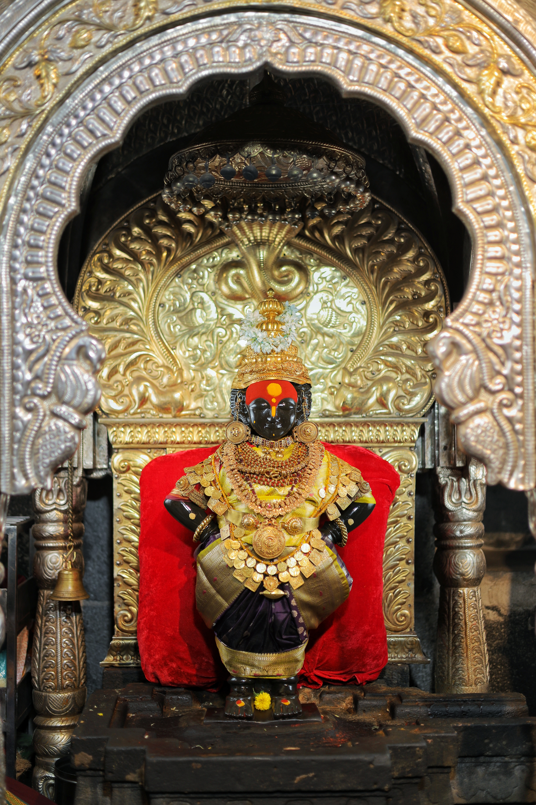
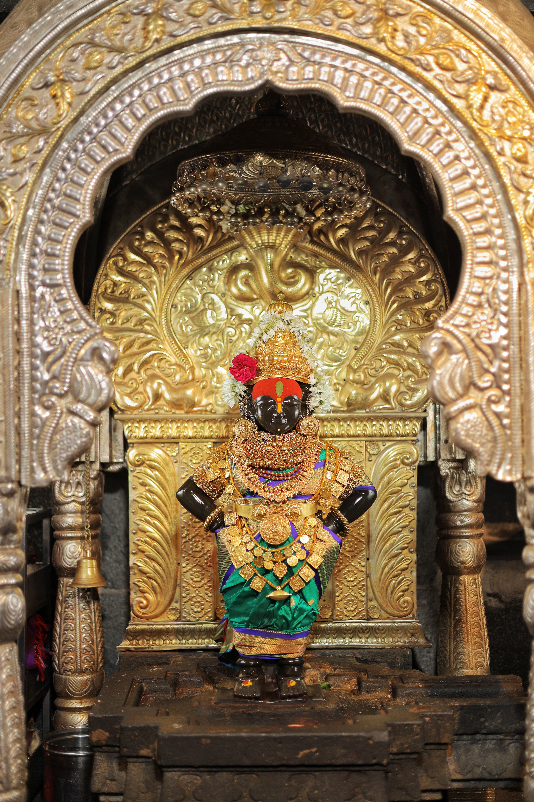

Rukmini
The Divine Consort of Lord Vitthal


Introduction to Rukmini
Rukmini, the principal queen of Lord Krishna, is worshipped as the divine consort of Lord Vitthal in Pandharpur. She is considered an incarnation of Goddess Lakshmi and represents devotion, patience, and divine love. Her temple, situated on the banks of the Chandrabhaga River, stands as a testament to her spiritual significance in the Varkari tradition.
Historical Significance
According to legend, Rukmini came to Pandharpur with Lord Krishna and chose to stay here permanently. The separate temple dedicated to her symbolizes her independent spiritual identity and her role as the divine mother to all devotees. The temple architecture reflects the artistic excellence of ancient times, with intricate carvings and spiritual symbolism adorning its walls.
Spiritual Significance
Rukmini's presence in Pandharpur holds deep spiritual significance. She is seen as the embodiment of divine love and devotion, teaching devotees the path of selfless service and unconditional love. Her temple serves as a place of worship where devotees seek her blessings for spiritual enlightenment and material prosperity.
Worship and Traditions
Devotees visiting Pandharpur make it a point to seek blessings at both the Vitthal temple and the Rukmini temple. Special prayers and rituals are performed during festivals, particularly during Kartik Ekadashi and Ashadhi Ekadashi. The tradition of visiting both temples symbolizes the complete spiritual experience, as Rukmini and Vitthal are considered inseparable in divine union.